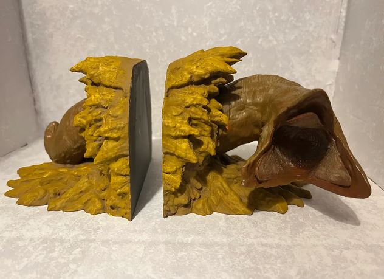
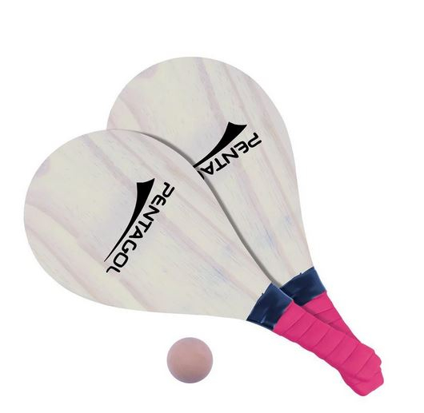
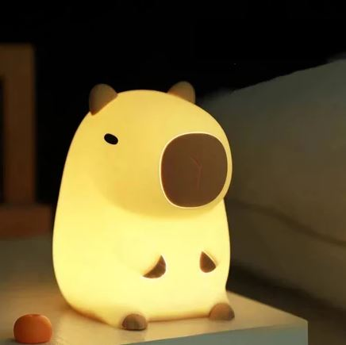

🏜️🎾 PRIMEIRO CAMPEONATO DE BEACH TENNIS DE ARRAKIS 🎾🏜️
Where the spice flows and the serves are hot!
SENHORAS E SENHORES NÃO DECLARADOS
Rayane Terra
Bio: Conhecida também como a mulher com os dedos mais rápidos do Setor Oeste, Rayane já conheceu vários cantos da galáxia, sempre fugindo de alguma mulher ou homem que havia jurado matá-la pelas mais variadas razões como "você transou com a minha esposa!" "você deflorou minha filha!" "você desvirtuou minha irmã!" "você fez minha mãe largar o meu pai!", parece que esse tipo de problema a segue... Veremos se ela conseguirá ter um momento de respaldo.
TIMES
Casa Raidanara
Membros: Nara e Raidan
Bio: Oriundos dos labirintos administrativos e burocráticos de um planeta na parte interna do Império, essa não é uma dupla que você conseguirá vencer pelo cansaço, eles estão acostumados a levarem porrada nas cortes (de justiça) e resistirão ainda mais nas cortes de tênis!
Habilidade
SUGAR SACRIFICE シュガー・サクリファイス (Shugā Sakurifaisu)Ao consumir qualquer docinho, Raidan entra em um estado de êxtase e sua performance esportiva aumenta em 300% por um set!
Casa Marlly
Membros: Marcela e Kelly
Bio: Com quase uma década de familiariedade, esse casal não irá se confundir na quadra. Elas conhecem os movimentos uma da outra e conseguem se orientar apenas pela AURA, anos de experiência com mestres de obra e obras no geral transformaram seus olhos em verdadeiras calculadoras, se não fossem lésbicas nenhum homem conseguiria enganá-las sobre o tamanho de seus pintos, pois elas conseguem bater o olho e falar exatamente quantos cm são necessários num ajuste de medida!
Habilidade
PRIVATE EYES プライバート・アイズ (Puraibāto Aizu)Conseguem saber com precisão se a bola irá para fora ou não!
Casa Gliterinadas
Membros: Hylly e Filipe
Bio: A vaidade é considerada um pecado, mas com certeza isso nunca foi um obstáculo para Filipe, que sempre buscou a perfeição física, não importa aonde ela o levasse. Para financiar seus procedimentos estéticos ele roubou, extorquiu, chantageou e ameaçou pelos mais variados cantos da Galáxia em busca daquela cirurgia que seria de fato a última, a que finalmente quietaria as vozes em sua cabeça que lhe diziam "só mais um pouquinho, no próximo você vai ficar realmente satisfeito com o resultado". Em uma de suas procuras ele acabou na frente de uma mulher, que em uma olhadela com o canto dos olhos lhe disse "eu sei o que você precisa", "pinto?" ele perguntou, mas ela só sorriu e lhe disse "vitamina C", e desde então Filipe manteve Hylly na sua lista de contatos, e ela está sempre lá pronta para ajustar a dieta de Filipe. Ele nunca se sentiu tão bonito.
Habilidade
METABOLIC OVERDRIVE メタボリック・オーバードライヴ (Metaborikku Ōbā Doraivu)Devido ao mix de nutrientes que Hylly prepara toda manhã, elas conseguem funcionar 24h seguidas sem perda de função significativa!
Casa Trinitas
Membros: João e Jonathan e Leandro
Bio: Durante muito tempo a dupla de caçadores de recompensa J&J vagou pela galáxia, em uma infame jornada de hedonismo que ficou famosa não apenas pela quantidade de drogas usadas, mas também os buracos que foram estourados, não havia um canto sequer que não havia sido explorado, eles conheciam todos os planetas, todos os lugares onde a escória da galáxia se escondia. Serviço dado era serviço cumprido na mão desses dois, ninguém conseguia resistir a força combinada de J&J, até o dia onde receberam uma comunicação para darem cabo de um certo Leandro. Ambos achavam que iria ser apenas mais um dia de trabalho, mas eles estavam completamente despreparados para o desafio que Leandro seria, e nesse gato e rato interestelar de fugas, capturas e tiroteios, Leandro se provou mais do que capaz para aguentar J&J ao mesmo tempo, toda a perseguição acabou por desgastá-los e tanto João quanto Johathan acabaram por aceitar o velho adágio "Se não podes vencer, junta-te". Nunca sabem dizer quem realmente lidera o bando, mas eles nunca foram tão intensos!
Habilidade
HOT SWAP GHOST ホットスワップ・ゴースト (Hotto Suwappu Gosuto)Devido ao nível de intimidade e sinergia que os três possuem, se uma das partes da dupla atuante sofre dano, ela consegue ser substituída no próximo jogo!
Casa Racket
Membros: Bomfá e Ana
Bio: Bomfá sempre foi um homem extremamente religioso, um Navacristão de Starda, que peregrinava com seus pais em uma caravana religiosa interestelar, nunca tendo tempo para constituir amizades, sempre sendo colocado para tocar sua guitarra e chamar a atenção de transeuntes, uma existência claramente deprimente. Mas tudo mudou no dia que uma mulher de cabelos vermelhos o socou e destruiu sua guitarra, partindo-a ao meio, uma seguidora do Culto de Serena, ela abominava qualquer forma de tecnologia. Bomfá nunca havia se sentido tão cativado por algo em sua vida, e naquele momento soube que seguiria aquela mulher até os confins da galáxia!
Habilidade
CROSS CRUSADE - クロス・クルセイド (Kurosu Kuruseido)O duo consegue se mover de forma extremamente eficiente na quadra, mantendo-se sempre nos axis formadores de uma cruz, formando uma defesa imbatível e santificada!!
Casa Gregorianna
Membros: Anna Camila Dani Lima (SUBBED IN) e Gregório
Bio: Uma palavra que definia a vida de Anna era cansaço, no entanto era uma ferida que havia sido infligida por ela mesma. Durante toda a sua vida ela havia se destacado, desde os três anos de idade era a melhor aluna, a mais esforçada e também uma das mais inteligentes, e ela jamais deixaria qualquer coisa derrubá-la da posição que havia cravado para si não apenas em uma, mas em duas guildas diferentes. Toda essa ambição tinha seu preço, ela não tinha tempo para nada em sua vida e era consumida por suas funções, todos os outros aspectos de sua vida eram negligenciados. Numa bela noite após seu turno de trabalho, Anna se encontrou em um clube que servia drinks e possuía um som diferente, uma harmonia complexa e um certo suingue que fazia com que ela quisesse se mover, no palco, um homem sorriu pra ela durante toda a apresentação e ao final desta se sentou ao seu lado, dizendo "Ei, não pude deixar de reparar no quão cansada você parecia, que tal relaxar um pouco?", Anna respondeu de forma debochada "Nossa, nunca pensei nisso antes, você é algum tipo de gênio?", enquanto o moço riu e disse "Apenas disso aqui" apontando para um estranho instrumento de sopro com o qual ela não era familiar, "e você, é gênia de que?", Anna sorriu, ela havia gostado dele.
Habilidade
ECHO TRACE SYSTEM - エコートレース・システム (Ekotorēsu Shisutemu)Com seu avançado senso de escuta, Gregório consegue determinar a trajetória da bola apenas pelo barulho do impacto dela na raquete!
OBS: A precisão pode ser afetada se houverem sons altos competindo por sua atenção
Casa Dentata
Membros: Maria Clara Reis e Isadora Tangari
Bio: Crescer num planeta nas fronteiras do Império jamais seria fácil, mas quando o ópio assolou sua colônia, Isadora acabou por desenvolver um ódio diferente. Não era a devastação e a miséria que o ópio trouxe que a irritava, eram os sorrisos. Eram os dentes corroídos e erodidos que os usuários exibiam ao abrirem suas bocas, gargalhando e se divertindo no êxtase da droga sem um pingo de cuidado com sua saúde bucal. Foi essa experiência que definiu seu futuro, ela começou a liderar uma vida dupla. De dia, ela trabalha como dentista reparando os sorrisos dos esquecidos pelo Império, pela noite, ela ataca aqueles que lucram com o comércio de Ópio. / "Feia" com certeza não é a palavra que pais esperam que seus filhos pronunciem pela primeira vez, mal sabiam os pais de Maria Clara que essa seria a palavra que definiria sua vida, não porque ela era desprovida de beleza, muito longe disso, mas porque a menina simplesmente não conseguia evitar de apontar a feiura daqueles com qual a genética não havia sido muito generosa, e isso acabou por colocá-la nas mais diversas confusões desde o jardim de infância. Ela nunca entendeu como as pessoas eram tão tolerantes e ficavam tão quietas diante do assalto aos olhos que as pessoas que ela denunciava eram, como aceitavam esse nível de poluição visual? Foi ao conhecer um membro da seita secreta dos Bene Tleilax que ela descobriu sua vocação, aparentemente estes haviam desbloqueado os segredos da manipulação genética e buscavam o refinamento físico, incluindo a mudança de suas feições, ela submergiu nesse conhecimento e desvendou seus mistérios, ninguém mais seria feio na frente dela se pudessem escolher.
Habilidade
MICRO TRACER - マイクロ・トレーサー (Maikuro Torēsā)Devido a sua experiência com procedimentos estéticos faciais, as sinapses de Maria Clara são especialmente atunadas aos mínimos movimentos da face, conseguindo determinar com precisão onde vão tentar acertar a bola.
Obs: não funciona tão bem em pessoas com muito botox
Casa Blomkfur
Membros: Luísa Blom e Paula Kfuri
Bio: Talvez a coisa mais difícil para uma pessoa adulta admitir é que seus pais estavam certos, Luísa constantemente ouvia em sua mente sua mãe lhe dizendo para largar essa vida de artista, que isso não iria lhe dar futuro e que sua vida não seria nada além de uma constante batalha para conseguir o mínimo. Essa era constantemente a impressão que Luísa tinha de sua própria vida, dormindo na parte de trás dos palcos, trocando shows por refeições, raramente conseguindo uma gig cujo pagamento seria sua diária em um bom quarto de hotel. A vida não era doce com uma cantora que viajava pelas Galáxias, até um fatídico encontro que mudaria sua vida. Ela estava cantando um sucesso interestelar de uma cantora de Giedi Prime, Paula Kfuri (LISTEN ON SPOTIFY NOW) , em um bar sem graça que estava bem vazio, exceto por uma voz em uma mesa distante que parecia super animada com sua performance, batendo muitas palmas a cada música. Após o show, enquanto estava coletando seus instrumentos, foi surpreendida por um toque no ombro, era a mulher da parte de trás do salão, mas com o capuz removido, ali estava ninguém mais ninguém menos do que PAULA KFURI, "Adorei sua performance, sua entrega dos meus backing vocais foi simplesmente incrível!", Luísa ficou um pouco sem graça, não porque não estava acostumada com elogios, ser elogiada por sua beleza nunca foi estranho, mas porque a cantora era reconhecida por toda galáxia e muito mais bonita ao vivo do que nos hologramas. Como lidar com uma mulher tão bonita? "Tímida é? Bem, espero que você perca essa timidez eventualmente, adoraria te ter na minha equipe de tour", mal sabiam elas que ali seria o começo de uma parceria que duraria por várias décadas...
Habilidade
EVERY BREATH YOU TAKE - エヴリィ・ブレス・ユー・テイク (Evurii Buresu Yū Teiku)Sendo conhecedora de várias técnicas de respiração e também de treinamento de cordas vocais, Paula consegue saber o quão cansados seus oponentes verdadeiramente estão apenas pelos ritmos de suas respirações e também pela cadência de suas falas, com isso ela sempre sabe o melhor momento para atacar de verdade!

Casa Matana
Membros: Matt Ramos e Ana
Bio: Matheus vivia uma vida de festas, porque viveria de qualquer outra forma? Ele era rico, bonito e tinha uma profissão almejada pela maioria da população, profissão esta que permitia seu estilo de vida luxuoso e relaxado, ser amigo daqueles que organizavam e tocavam nas festas mais badaladas acaba por levá-lo todo dia a balada, a farra, e infelizmente, a bebida. Ele sempre teve um alto nível de resistência a álcool e talvez tenha sido isso que não o deixou notar o quão fora da normalidade da maioria da população eram os seis copos diários de uísque que ele tomava, um dia seu porre foi longe demais e ele foi parar no hospital. Ao acordar, recebeu um copo de água da médica mais bonita que ele havia visto em toda a sua vida (e ele conhecia muitas médicas) "Você sempre bebe assim, sr. Matheus?" inquiriu a morena, "Só quando não tem água" disse, "Qualquer lugar tem água, tome vergonha na cara!", "Bom argumento, mas não da sua água...Dra...", "Dra. Anna" finalizou, deixando escapar um leve sorriso, e não é que o filho da mãe era charmoso?
Habilidade
MEDICAL RECORDS - メディカル・レコード (Medikaru Rekōdo)Anos de experiência com contingência de gastos em hospitais e também lidando com seguros médicos deixaram os olhos e tato de Matheus com capacidade sobrenatural de perceber lesões e problemas de saúde pré existentes, ele sabe exatamente qual o joelho ruim ou o pulso mais fraco de seus oponentes e usará disso em seu planejamento tático no momento do jogo.
Casa Medizin
Membros: Renata e Letícia
Bio: Letícia era uma promissora jogadora de tênis em sua infância e adolescência, ganhou inúmeros campeonatos e vários scouts esportivos a tinham como a nova sensação galáctica do esporte, apesar do tamanho da galáxia, um talento ambidextro como o dela ainda era raro. Até que o rompimento do ligamento de um dos seus joelhos durante seu estágio em uma guilda médica colocou fim a sua ascensão no esporte, os médicos disseram que as condições de seu joelho direito eram piores do que a de pacientes com o quádruplo de sua idade. Roubada daquilo que sempre havia almejado e visto como seu por direito, Letícia caiu em uma vida mundana de álcool, mulheres e brigas com homens em bares, ela adorava brigar com os homens, tão fáceis de serem provocados e nada mais satisfatório do que acabar com alguém que estava hiper confiante em suas habilidades, ela era imbatível com duas raquetes, haviam rumores de que só havia um homem melhor do que ela em todo o quadrante com duas raquetes., após uma briga numa famosa boate de música interioriana de Kirana III, Letícia foi abordada por uma mulher com um rosto afiado, cabelo penteado de forma impecável, que lhe disse "você se apoia muito na sua perna esquerda, joelho ruim? Meus pacientes geralmente são assim, preferem uma perna a outra", "e quem são seus pacientes?", "idosos, mas juro que alguns dos meus tem joelhos melhores do que esse teu, já ouviu falar de artroplastia? As minhas próteses são as melhores para vidas quietas, com certeza o oposto da vida que você anda levando", "E quanto seria uma prótese?", "Mais do que você tem, elas também precisam de manutenção e a minha hora não é barata", "Como você espera que eu pague então?", "se você jogar 70% das suas partidas que assisti na Guilda Médica acho que estaremos bem de vida, que tal...30% dos seus ganhos futuros?" "Médica e Ladra?" riu Letícia, "Médica, ADVOGADA e agora também empresária. Eu sempre fui ótima em multi-tarefas" disse Renata.
{kind=link}
Habilidade
RAY-BAN REQUIEM - レイバン・レクイエム (Reiban Rekuiemu)Acostumadas com altos níveis de iluminação nas salas de cirurgia por dezenas de horas, a luz do sol não as incomoda durante uma partida e não possuem a tradicional desvantagem de jogarem contra ele.
Casa Thomasomenos
Membros: Thomás e Raquel Ameno
Bio: Thomás nunca se sentiu parte das comunidades que integravam o seu planeta natal, durante toda a sua infância e adolescência tudo que queria era escapar das intermináveis lições em sua escola, ele não queria ouvir sobre o Imperador ou sobre a história de casas nobres de planetas a anos luz de distância. Durante uma de suas escapadas noturnas, logo antes dos exames das guildas, viu um homem fazendo um desenho em uma parede com uma lata de spray, algo proibido onde morava e que certamente acarretaria em sanções pelas forças que policiavam sua cidade, mesmerizado, ele seguiu o pixador e se tornou seu aprendiz. A vida que ele escolheu de vagar pela galáxia procurando murais para espalhar sua arte não é fácil, não há qualquer semblante de dinheiro e a comida é sempre escassa, mas ele finalmente se sente em seu devido lugar. / Uma arqueóloga e restauradora especialista na recuperação de templos e obras de arte do período pré Jihad Butleriana, tem mãos delicadíssimas e um olhar especial para o detalhe. Curiosamente já foi parte das Bene Gesserit mas abandonou a ordem, sentia que tinha mais a viver do que ser apenas mais uma executora de algo que havia sido designado há milhares de anos atrás.
Habilidade
MANLET CRUSHER - マンレット・クラッシャー (Manretto Kurasshā)Ao ver homens baixos em sua quadra, Raquel entra em um frenesi incomparável e tem todas suas habilidades de agressão aumentadas, além de maior força muscular, tornando seu jogo muito mais vicioso e perigoso!
Obs: Não funciona em homens altos, ou mulheres.
Casa Miranda
Membros: Marcela Carneiro e Roberta
Bio: Marcela sempre se sentiu perdida durante toda a sua vida, ela nunca conseguiu se sentir verdadeiramente acolhida por nenhuma mulher, cidade após cidade, planeta após planeta, todas acabavam decepcionando-a. Esse ciclo a levou numa espiral descendente das mais diversas experiências pela Galáxia, se ela não conseguia amor, ela ia conseguir a melhor coisa antes disso, prazer. Após vagar por anos, ela estava se sentindo dejeitada e deprimida consigo mesmo, nem a festa de HYPER LESBIAN TECHNO havia conseguido animar seus espíritos, andando por uma praia em uma cidade litorânea no core da galáxia ela viu um sinal de neon na distância bem chamativo, se aproximando ela conseguiu finalmente reconhecer as letras "MOMMY DOMMY CASA HOUSE", curiosa, ela adentrou uma escada que parecia descer por vários níveis até chegar em uma academia com equipamentos antigos e pesos de ferro não guardados, havia apenas uma mulher malhando aquela hora e ao se aproximar Marcela notou seus braços e corpo definido por anos de exercício e disciplina, ela parecia ser bonita de costas ao menos. "Ei", a mulher se virou e Marcela notou que ela também era bonita de frente, "você parece triste" disse a mulher musculosa, deixando o peso cair no chão e se aproximando, "talvez você precise de um abraço", Marcela se sentiu um pouco presa no lugar quando viu que os braços daquela gaja já estavam passando por debaixo dos seus, ela havia sido instantaneamente enlaçada e tentou se desvencilhar daquele abraço, mas algo era diferente, um acolhimento que ela nunca havia sentido antes em sua vida, ela cedeu e colocou sua cabeça por debaixo do pescoço daquela que a abrigava, "qual seu nome" perguntou. "Roberta" disse a musculosa, talvez ficar ali não seria tão ruim assim...
Habilidade
BIO OMEN - バイオ・オメン (Baio Omen)Devido a sua vasta gama de experiência com o corpo feminino, Marcela consegue ver até três segundos do futuro de alguma mulher em seu campo de visão, usando disso para saber seus próximos movimentos no jogo.
Obs: Quanto mais a mulher alvo de seu poder se afastar do "padrãozinho" e quanto menos de suas características físicas forem percebíveis, menos Marcela consegue ver de seu futuro.
CHAVES DO CAMPEONATO
Quando definidas as chaves por sorteio elas ficarão aqui
PRÊMIOS
Primeiro Lugar
🏆 Troféu Raquete de Ouro
Um lindo bookstand feito na imagem dos sagrados Shai-Hulud (vai vir em outra cor)
Segundo Lugar
🥈 Medalha de Prata
Vocês chegou perto de conquistar as areias urbanas, espero que encontre tempo para treinar com esse kit de frescobol!
Terceiro Lugar
🥉 Medalha de Bronze
Alcancem novos patamares nas suas vidas sexuais with ONE SIMPLE TRICK